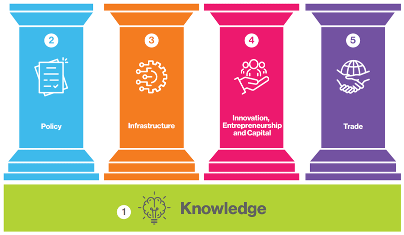

The Nigerian Communications Commission is the independent National Regulatory Authority for the telecommunications industry in Nigeria.
Vision
A dynamic regulatory environment that ensures universal access to affordable and equitable service and supports the nation's economic growth.
KEYWORDS: dynamic, regulatory, universal access, affordable, equitable, supports, economic growth
Mission
To support a market driven Communications industry and promote universal access.
KEYWORDS: support, market-driven, industry, promote, universal access.
Guiding Principles (3 F's)
~ Firm
~ Fair
~ Forthright
Core Values
~ Professionalism
~ Responsiveness
~ Execellence
~ Commitment
~ Integrity
~ Innovation
Acronym: RECIIP
Leadership
~ Executive Vice Chairman: Dr. Aminu Maida
~ Executive Commissioner: Engr. Sunday Abraham Oshadami
~ Executive Commissioner: Rimini Haraya Makama
Organizational Structure
Mandate
The mandate of the Nigerian Communications Commission is established in the Nigerian Communications Act 2003, which was signed into law by the President, Chief Olusegun Obasanjo (GCFR) on the 8th of July 2003 after being passed by both Houses of the National Assembly. The Act provides the NCC with the capacity to properly carry out its Regulatory functions and activities.
Powers of NCC
~ Power to issue, suspend or revoke licences
~ Power to issue, vary, modify & revoke directions
~ Power to investigate any matter pertaining to the administration of the Act
~ Information gathering powers • Power to develop and publish Regulations & Guidelines
~ Power to resolve disputes of persons subject to the Act
~ Power to manage and administer the frequency spectrum for the communications sector
Functions of the NCC
The Functions of the Nigerian Communications Commission are derived from Chapter 2 Section 4 of the Nigerian Communications Act (NCA) of 2003:
~ The facilitation of investments in and entry into the Nigerian market for provision and supply of communications services, equipment and facilities.
~ The protection and promotion of the interests of consumers against unfair practices including but not limited to matters relating to tariffs and charges for and the availability and quality of communications services, equipment and facilities.
~ Ensuring that licensees implement and operate at all times the most efficient and accurate billing system.
The promotion of fair competition in the communications industry and protection of communications services and facilities providers from misuse of market power or anti-competitive and unfair practices by other service or facilities providers or equipment suppliers.
~ Granting and renewing communications licences whether or not the licences themselves provide for renewal in accordance with the provisions of this Act and monitoring and enforcing compliance with licence terms and conditions by licensees.
~ Proposing and effecting amendments to licence conditions in accordance with the objectives and provisions of this Act.
~ Fixing and collecting fees for grant of communications licences and other regulatory services provided by the Commission.
~ The development and monitoring of performance standards and indices relating to the quality of telephone and other communications services and facilities supplied to consumers in Nigeria having regard to the best international performance indicators.
~ The development and monitoring of performance standards and indices relating to the quality of telephone and other communications services and facilities supplied to consumers in Nigeria having regard to the best international performance indicators.
~ Making and enforcement of such regulations as may be necessary under this Act to give full force and effect to the provisions of this Act.
~ Management and administration of frequency spectrum for the communications sector and assisting the National Frequency Management (NFM) Council in developing a national frequency plan.
~ Development, management and administration of a national numbering plan and electronic addresses plan and the assignment of numbers and electronic addresses there from to licensees.
~ Proposing, adopting, publishing and enforcing technical specifications and standards for the importation and use of communications equipment in Nigeria and for connecting or interconnecting communications equipment and systems.
~ The formulation and management of Nigeria’s inputs into the setting of international technical standards for communications services and equipment.
~ Carrying out type approval tests on communications equipment and issuing certificates on the basis of technical specifications and standards prescribed from time to time by the Commission.
~ Encouraging and promoting infrastructure sharing amongst licensees and providing regulatory guidelines thereon.
~ Examining and resolving complaints and objections filed by and disputes between licensed operators, subscribers or any other person involved in the communications industry, using such dispute-resolution methods as the Commission may determine from time to time including mediation and arbitration.
~ Preparation and implementation of programmes and plans that promote and ensure the development of the communications industry and the provision of communications services in Nigeria.
~ Designing, managing and implementing Universal Access strategy and programme in accordance with Federal Government’s general policy and objectives thereon.
~ Advising the Minister on the formulation of the general policies for the communications industry and generally on matters relating to the communications industry in the exercise of the Minister’s functions and responsibilities under this Act.
~ Implementation of the Government’s general policies on communications industry and the execution of all such other functions and responsibilities as are given to the Commission under this Act or are incidental or related thereto.
~ Generally advising and assisting communications industry stakeholders and practitioners with a view to the development of the industry and attaining the objectives of this Act and its subsidiary legislation.
~ Representation of Nigeria at proceedings of international organisations and fora on matters relating to regulation of communications and matters ancillary and connected thereto.
~ The general responsibility for economic and technical regulation of the communications industry.
Objectives of the NCC
The Objectives of the Nigerian Communications Commission are derived from Chapter 1 Section 1 of the Nigerian Communications Act (NCA) of 2003:
~ To promote the implementation of the national communications or telecommunications policy as may from time to time be modified and amended.
~ To establish a regulatory framework for the Nigerian communications industry and for this purpose to create an effective, impartial and independent regulatory authority.
~ To promote the provision of modern, universal, efficient, reliable, affordable and easily accessible communications services and the widest range thereof throughout Nigeria.
~ To encourage local and foreign investments in the Nigerian communications industry and the introduction of innovative services and practices in the industry in accordance with international best practices and trends.
~ To ensure fair competition in all sectors of the Nigerian communications industry and also encourage participation of Nigerians in the ownership, control and management of communications companies and organisations.
~ To encourage the development of a communications manufacturing and supply sector within the Nigerian economy and also encourage effective research and development efforts by all communications industry practitioners.
~ To protect the rights and interest of service providers and consumers within Nigeria.
~ To ensure that the needs of the disabled and elderly persons are taken into consideration in the provision of communications services.
~ To ensure an efficient management including planning, coordination, allocation, assignment, registration, monitoring and use of scarce national resources in the communications sub-sector, including but not limited to frequency spectrum, numbers and electronic addresses, and also promote and safeguard national interests, safety and security in the use of the said scarce national resources.
Strategic Vision
As an agency under the Federal Ministry of Communications, Innovation and Digital Economy (FMoCIDE), the NCC's strategic vision is aligned with the strategy blueprint of the Ministry to ensure a thriving Nigerian digital economy.
FMoCIDE stretegic blueprint consists of 5 elements; 1 foundation and 4 pillars:

1. Knowledge
2. Policy
3. Infrastructure
4. ICE(Innovation, Capital, Enterpreneurship)
5. Trade
Acronym: KIPIT